Lección 4.C - Simulación de procesos MA(2) en la región de invertibilidad
Objetivo de la práctica
| Guión: | P-L04-C-simulacion-procesos-MA.inp |
Objetivo
- Observar la ACF y PACF de distintos modelos MA(\(2\)) en las distintas regiones del triángulo de invertibilidad.
Requerimientos previos
Programe o recupere de una práctica anterior una función que simule procesos MA(\(q\))
function series SimuladorMA(matrix theta)
# SimuladorMA(theta) simula un proceso MA(q),
# donde theta es el polinomio MA y q es su grado.
series WN = normal (0,1)
series X = 0
loop i=1..cols(theta)
X = X + theta[i]*WN(1-i)
endloop
return X
end function
Para que se observe bien la estructura de las ACF y PACF estimadas, establezca un tamaño de muestra suficientemente grande.
# establecemos la muestra
nulldata 3500
setobs 12 1900:01 --time-series
Recuerde cómo usar la función
scalar theta1 = 0
scalar theta2 = 0.8
series X = SimuladorMA( {1, -theta1, -theta2} )
figura <- corrgm X 12
Actividad 1 - Probando pares de valores en distintas regiones de invertibilidad
Asigne varios pares de valores \(\theta_1\) y \(\theta_2\) que pertenezcan a cada una de las regiones indicadas en la figura y explore cómo se comportan la AFC y PACF en cada caso.

\[ \rho_1=\frac{-\theta_1(1-\theta_2)}{1+\theta_1^2+\theta_2^2} ;\qquad \rho_2=\frac{-\theta_2}{1+\theta_1^2+\theta_2^2} ;\qquad \pi_1=\rho_1 ;\qquad \pi_2=\frac{\rho_2-\rho_1^2}{1-\rho_1^2} ;\qquad \pi_3=\frac{\rho_1^3-\rho_1\rho_2(2-\rho_2)}{1-\rho_1^2-2\rho_1^2(1-\rho_2)} ;\quad\dots \]
Zona 1
Correlogramas en zona 3
- \(\theta_2=0.5\)
- \(\theta_1=0,\quad0.1,\quad0.2,\quad0.3,\quad0.4,\quad0.5\).
Zona 2
Correlogramas en zona 3
- \(\theta_2=-0.5\)
- \(\theta_1=-0.5,\quad-0.4,\quad-0.3,\quad-0.2,\quad-0.1,\quad0\).
.png) 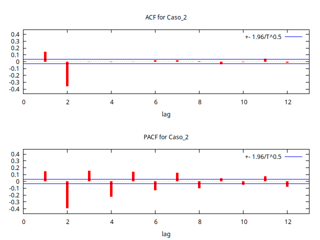
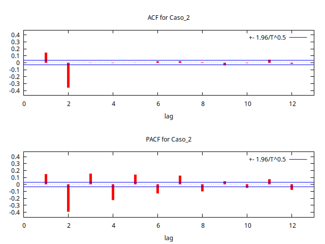
.png) 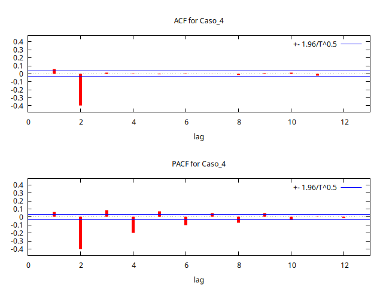
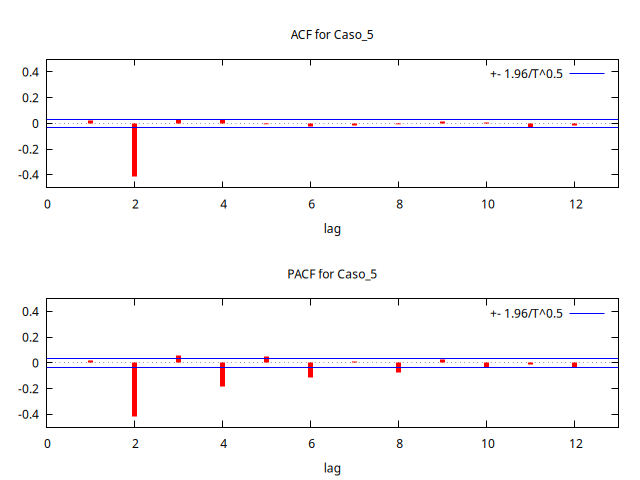
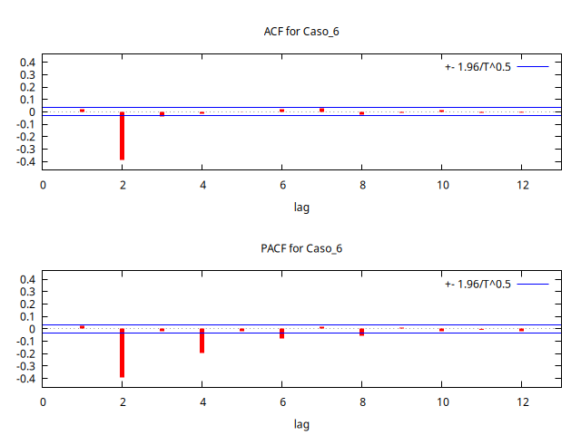
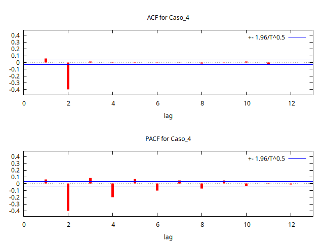
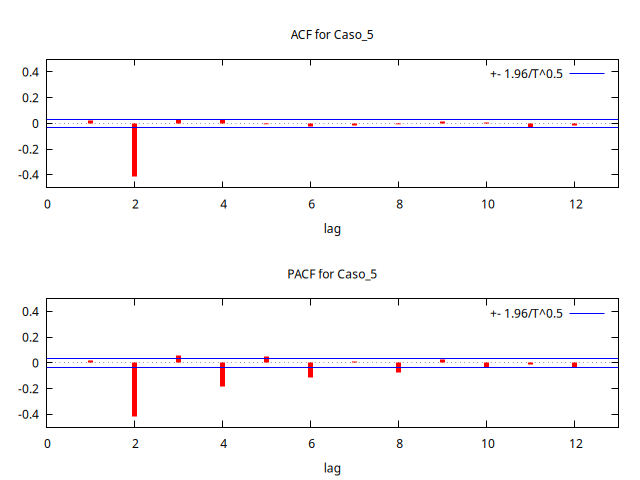
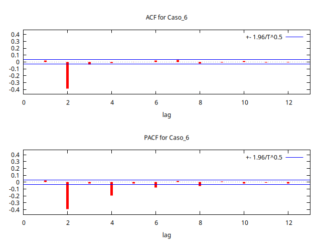
Zona 3
Correlogramas en zona 3
- \(\theta_2=-0.99\)
- \(\theta_1=-1.99,\quad-1.6,\quad-1.2,\quad-0.8,\quad-0.4,\quad0\).
Zona 4
Correlogramas en zona 4
- \(\theta_2=-0.99\)
- \(\theta_1=0,\quad0.4,\quad0.8,\quad1.2,\quad1.6,\quad1.99\).
.png) 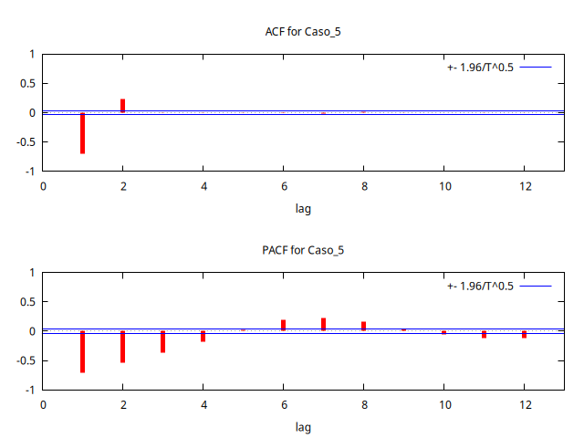
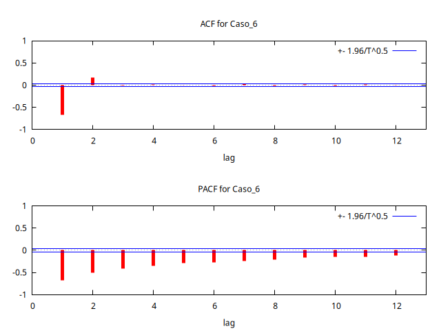
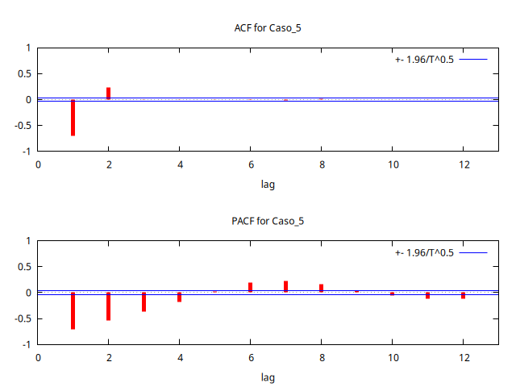
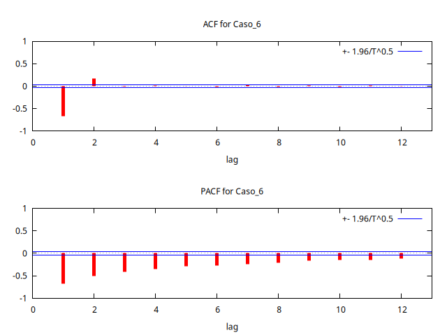
Eje vertical
Correlogramas en zona 3
- \(\theta_1=0\)
- \(\theta_2\approx-1,\quad-0.7,\quad-0.3,\quad0,\quad0.3,\quad0.7,\quad1\).
Parábola
Correlogramas en zona 3
- \(\theta_1\approx-1,\quad-0.7,\quad-0.3,\quad0,\quad0.3,\quad0.7,\quad1\).
- \(\theta_2=\frac{-\theta_1^2}{4}\)
.png) 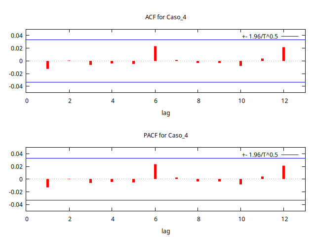
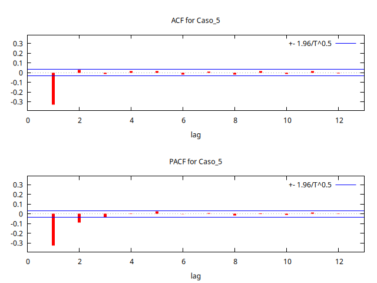
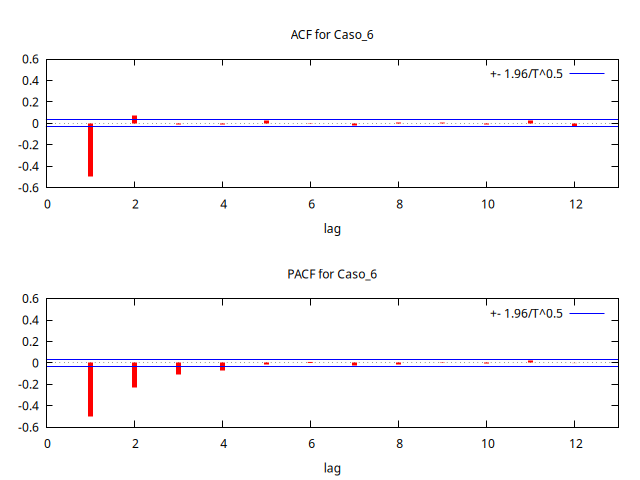
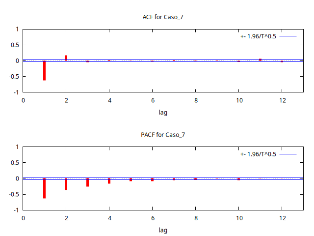
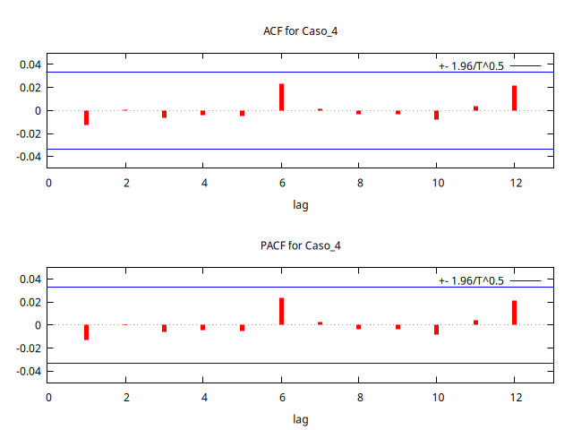
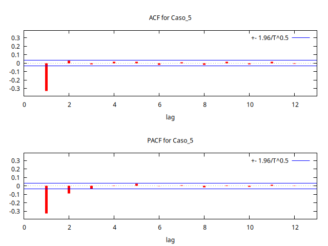
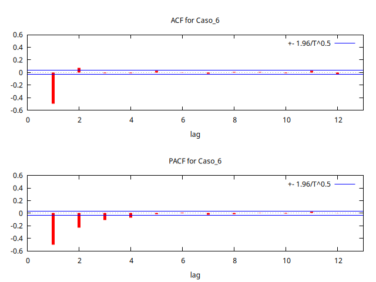
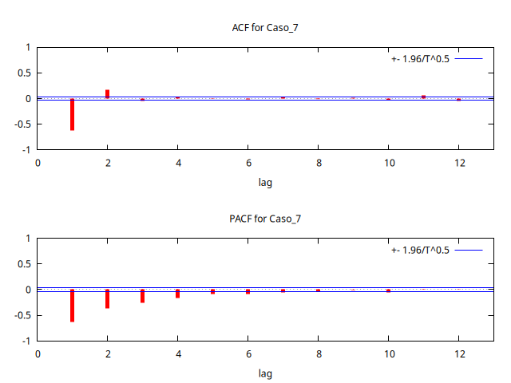